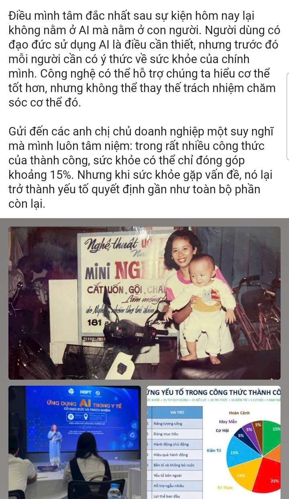

01 · Đạo đức
Minh bạch, công bằng, lấy người bệnh làm trung tâm
Thảo luận cách thiết kế và sử dụng AI tránh thiên lệch, bảo vệ quyền lợi người bệnh và duy trì vai trò chuyên môn của nhân viên y tế.
Seminar chuyên sâu dành cho bác sĩ, nhà quản lý bệnh viện, chuyên gia công nghệ y tế, sinh viên Y khoa, nhà khoa học và đối tác quan tâm đến triển khai AI an toàn, minh bạch, lấy người bệnh và hệ thống y tế làm trung tâm.
Chương trình được thiết kế để kết nối góc nhìn chiến lược, chuyên môn lâm sàng và quản trị công nghệ, giúp các đơn vị y tế tiếp cận AI theo hướng an toàn, có kiểm soát và tạo giá trị thực tế.
Thảo luận cách thiết kế và sử dụng AI tránh thiên lệch, bảo vệ quyền lợi người bệnh và duy trì vai trò chuyên môn của nhân viên y tế.
Xem xét dữ liệu, an toàn thông tin, kiểm soát chất lượng, phân quyền, giám sát và cơ chế phản hồi khi triển khai AI trong môi trường y tế.
Định hướng các tình huống AI hỗ trợ vận hành, telemedicine, quản lý bệnh viện và nâng cao trải nghiệm chăm sóc sức khỏe.
Khung chương trình từ 08h30 đến 12h00, bao gồm khai mạc, 3 bài trình bày chuyên đề và phiên thảo luận mở.
Các bài trình bày được cấu trúc theo ba lớp: định hướng giải pháp, chuyên môn y tế và quản lý công nghệ thông tin.
Phụ trách Giải pháp Y tế số HOPT · Đơn vị chủ trì
Định hướng triển khai AI y tế theo hướng an toàn, có trách nhiệm, gắn với nhu cầu bệnh viện và hệ sinh thái y tế số.
Keynote 1Bác sĩ chuyên khoa · Nhà sáng lập & Nhà lãnh đạo Kinderhealth
Chia sẻ góc nhìn chuyên môn lâm sàng, tính an toàn, niềm tin và vai trò của bác sĩ khi ứng dụng AI trong chăm sóc sức khỏe.
Keynote 2Phó Trưởng phòng CNTT · Sở Y tế TP.HCM
Thảo luận về quản trị dữ liệu, tích hợp hệ thống, an toàn thông tin và trách nhiệm quản lý khi đưa AI vào môi trường y tế.
Keynote 3Những chia sẻ chân thành của khách mời tham dự — góc nhìn về dữ liệu, đạo đức công nghệ và vai trò con người trong hành trình ứng dụng AI vào y tế.
Ngồi nghe các chuyên gia chia sẻ, mình nhận ra rằng điều ngành y tế cần không hẳn là AI trước tiên, mà là dữ liệu đúng - đủ - sạch - sống. Khám bệnh đôi khi chỉ là một điểm chạm ngắn trong hành trình sức khỏe của một con người, trong khi khoảng trống lớn lại nằm ở giai đoạn sau thăm khám.
Càng nghe, mình càng thấy đây không đơn thuần là một dự án CNTT. Y tế là nơi giao thoa giữa cơ thể con người, tâm lý, cảm xúc, niềm tin và văn hóa sử dụng. Câu chuyện không chỉ nằm ở công nghệ hay mô hình AI, mà còn ở cách quản trị dữ liệu và lựa chọn những giải pháp nền tảng đủ bền vững để phát triển lâu dài.
Điều mình tâm đắc nhất sau sự kiện lại không nằm ở AI mà nằm ở con người. Công nghệ có thể hỗ trợ chúng ta hiểu cơ thể tốt hơn, nhưng không thể thay thế trách nhiệm chăm sóc cơ thể đó.

Le & Partners was honored to join the discussion, contributing perspectives on the opportunities, challenges, and principles required for AI to be applied effectively, safely, and responsibly across the healthcare system. One key message emphasized during the seminar was clear: Vietnam hospitals need a governance framework for AI in healthcare.
🔗 Xem bài viết gốc trên LinkedInHai mã QR phục vụ đăng ký tham dự và truy cập tài liệu/presentation của seminar.
Dành cho đại biểu đăng ký thông tin tham gia seminar.
Mở form đăng kýTruy cập tài liệu và presentation của các diễn giả.
Mở thư mục tài liệuTrang seminar nhấn mạnh các nguyên tắc nền tảng khi đưa AI vào hệ thống y tế.